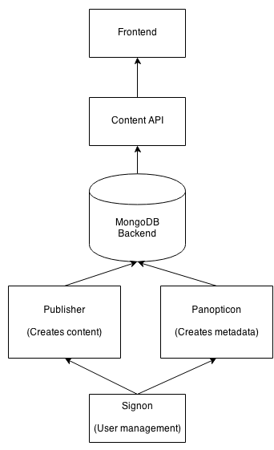
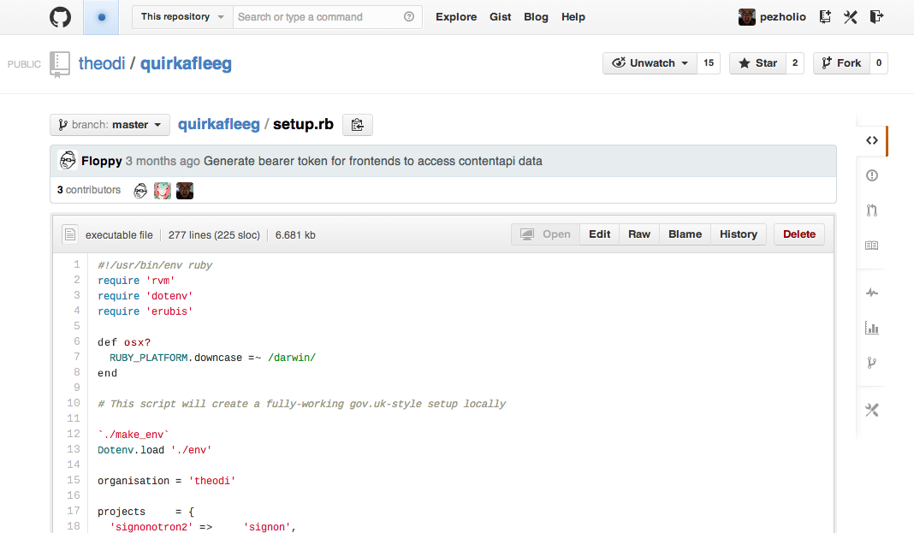
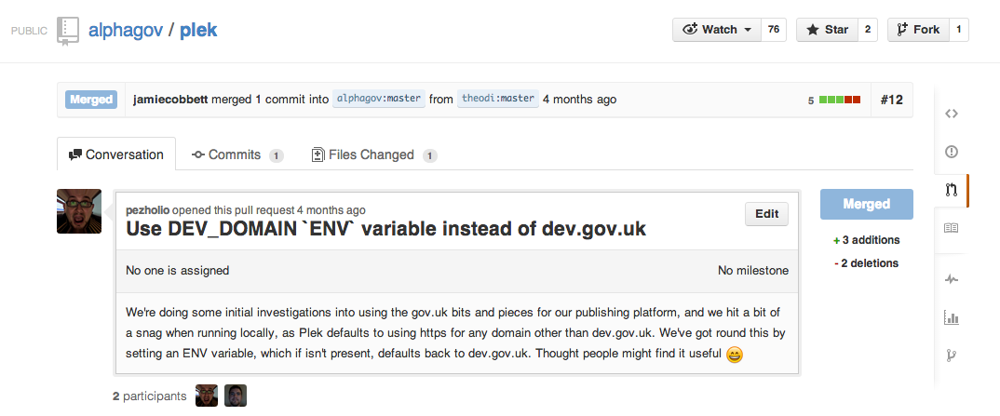

{% include odi_logo.html %}
{% include standard_title.html %}
ODI Tech Team
- started January 2013
- mixture of skills
- data science
- statistics
- public data
- devops
- engineering
- building tools for open data
- showing best practice
- open culture in code
Our Principles
- Open By Default
- Borrow Mercilessly
- Experiment and Learn
- Share Everything
- Be Ourselves
Our Approach
- Open tools
- Open workflow
- Open communication
- Continuous deployment
- Infrastructure as code
Our old website
- Built with Drupal
- Inherited from the early days of the ODI
- Inflexible (but, sometimes, too flexible)
- Not built for automation
Our wishlist
- Content = data
- APIs everywhere
- Flexible - multiple frontends
- Automatable
- A platform, not a website!
Gov.uk is:
- Open source
- Built in the open
- Built with Ruby (amongst other languages)
- The API is the service
Many parts, loosely joined

Panopticon

Many parts, loosely joined
- Content is managed as editions
- Content is entered as markdown
- (Content, not presentation!)
- Easy to add extra content types and fields
- Pushed to an API
- The frontend consumes the API
- (and so can other frontends)
- The API is public
Workflow
- For code: GitHub Flow
- Branch
- Code
- Pull Request
- Merge
- For content:
- Create new edition
- Edit
- Review
- Publish
Workflow
- Comments attached to changes
- Reviewers notified automatically
- Even handles external reviewers
Documentation as code

Pushed back improvements

Commits everwhere!

Future plans
- Push back changes
- Shared templates
- Moar frontends!
- Learning
- Labs / Tech
- Specific Projects
{% include odi_tech_team.html %}